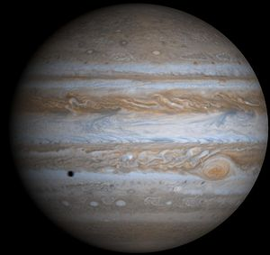

Jupiter
 Die Masse vom Jupiter beträgt
1,899 · 1027
kg.
Mehr Informationen dazu auf
Wikipedia(Jupiter).
Die Masse vom Jupiter beträgt
1,899 · 1027
kg.
Mehr Informationen dazu auf
Wikipedia(Jupiter).
Die Masse vom Saturn beträgt
5,685 · 1026
kg.
Mehr Informationen dazu auf
Wikipedia(Saturn).
Die Masse vom Uranus beträgt
8,683 · 1025
kg.
Mehr Informationen dazu auf
Wikipedia(Uranus).
Die Masse vom Neptun
1,0243 · 1026
kg.
Mehr Informationen dazu auf
Wikipedia(Neptun).